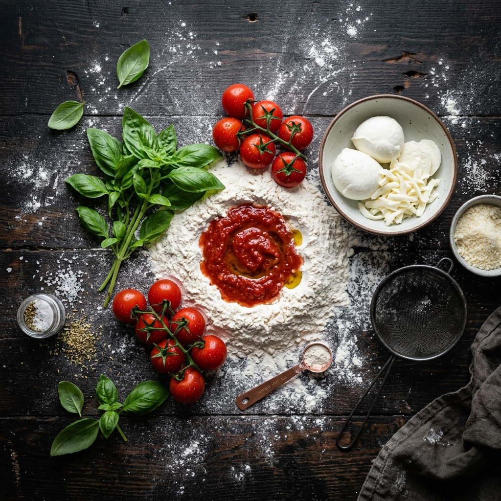

Autorska pizza z włoskich składników, klimatyczny bar i zmieniające się wystawy sztuki. Jedno miejsce, w którym każda wizyta to nowe doświadczenie — i wyjątkowy smak.
Zobacz menu ↓O nas
GARAGE to miejsce zrodzone z prawdziwej miłości do jedzenia i kultury. Otworzyliśmy swoje podwoje w grudniu 2025 roku, przynosząc ze sobą 15 lat doświadczenia w gastronomii i autorski przepis na pizzę z włoskich składników, nad którym pracowaliśmy latami.
Połączyliśmy włoskie smaki z przestrzenią dla sztuki — regularnie goszczą u nas wystawy lokalnych twórców. Przy barze czeka świeża bazylia, rozmaryn i aromatyczna oliwa. To więcej niż restauracja — to miejsce, które żyje.

„Nasz cel był prosty — stworzyć miejsce, gdzie dobra pizza, kawa i sztuka spotykają się w jednym. Jaworzno zasługiwało na coś takiego."
— Agata Barańska & Mateusz Łęski, Właściciele
Co mówią goście
„Niesamowite miejsce! Składniki świeże jak marzenie. Klimat garażu z wystawą sztuki na ścianie — nie spodziewałam się czegoś takiego w Jaworznie. Wracam na pewno!"
„Panini pastrami to absolutny hit. Bardzo miła obsługa, kawa na poziomie, a do tego ciasteczko gratis — małe rzeczy robią wielką różnicę. Lokal ma niepowtarzalny styl."
„Byłem sceptyczny, bo Jaworzno nie kojarzyło mi się z taką gastronomią. Pomyliłem się całkowicie. Wnętrze świetne, obsługa z pasją, jedzenie uczciwe i smaczne. Brawo!"
„Lemoniada domowa z marakuią to coś absolutnie wyjątkowego. Przy barze można wziąć świeżą bazylię — detal, który mówi wszystko o podejściu właścicieli. Polecam z całego serca."
„Przekąska pomodoro ze świeżą bazylią i grana padano — jak w Toskanii. Mateusz wyraźnie zna się na swoim rzemiośle. Zmienne wystawy sztuki sprawiają, że każda wizyta jest inna."
„Bardzo oryginalne miejsce, łączące gastro ze sztuką. BBQ panini smakuje świetnie. W piątek był spory ruch i czekaliśmy chwilę, ale na pewno wrócimy."
„Agata i Mateusz stworzyli coś naprawdę wyjątkowego. Widać, że za tym wszystkim stoi lata doświadczenia — nie tylko w kuchni, ale też w rozumieniu, czego goście potrzebują."
„Pyszna kawa, miła atmosfera i jeszcze wystawa artysty lokalnego na ścianie. Byłam z córką, obie zachwycone. Panini klasyczne było idealne — prosta receptura, doskonała realizacja."
„Niesamowite miejsce! Składniki świeże jak marzenie. Klimat garażu z wystawą sztuki na ścianie — nie spodziewałam się czegoś takiego w Jaworznie. Wracam na pewno!"
„Panini pastrami to absolutny hit. Bardzo miła obsługa, kawa na poziomie, a do tego ciasteczko gratis — małe rzeczy robią wielką różnicę. Lokal ma niepowtarzalny styl."
„Byłem sceptyczny, bo Jaworzno nie kojarzyło mi się z taką gastronomią. Pomyliłem się całkowicie. Wnętrze świetne, obsługa z pasją, jedzenie uczciwe i smaczne. Brawo!"
„Lemoniada domowa z marakuią to coś absolutnie wyjątkowego. Przy barze można wziąć świeżą bazylię — detal, który mówi wszystko o podejściu właścicieli. Polecam z całego serca."
„Przekąska pomodoro ze świeżą bazylią i grana padano — jak w Toskanii. Mateusz wyraźnie zna się na swoim rzemiośle. Zmienne wystawy sztuki sprawiają, że każda wizyta jest inna."
„Bardzo oryginalne miejsce, łączące gastro ze sztuką. BBQ panini smakuje świetnie. W piątek był spory ruch i czekaliśmy chwilę, ale na pewno wrócimy."
„Agata i Mateusz stworzyli coś naprawdę wyjątkowego. Widać, że za tym wszystkim stoi lata doświadczenia — nie tylko w kuchni, ale też w rozumieniu, czego goście potrzebują."
„Pyszna kawa, miła atmosfera i jeszcze wystawa artysty lokalnego na ścianie. Byłam z córką, obie zachwycone. Panini klasyczne było idealne — prosta receptura, doskonała realizacja."
Znajdź nas